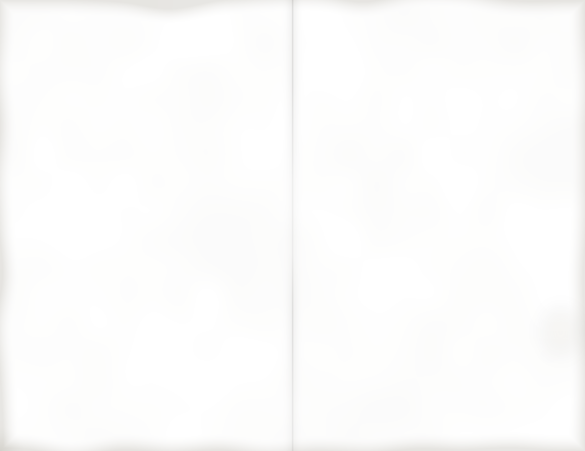

Passed on trays, or set out on your sideboard.
Italian toasts
the dozen 9.00French bread rounds, baked crisp. Half with ricotta, lemon peel and honey, half with mushrooms sautéed in garlic and thyme, under Parmesan.
Shrimp cocktail
the dozen 18.00Jumbo shrimp, poached and well chilled, with a sharp horseradish sauce and lemon.
Rumaki
the dozen 7.50Chicken livers and water chestnuts in bacon, broiled.
Manhattans
the pitcher 18.00Rye, sweet vermouth and bitters, stirred with ice, poured straight up over a cherry. Serves eight.
Delivered from dawn. We set it out and slip away.
Sutton Place platter
per guest 6.50Toasted bagels, whipped cream cheese, sliced Nova, capers, red onion cut thin and fresh dill.
Belgian waffles
per guest 4.25Made at your stove by our cook. Maple syrup, sweet butter, berries in season.
A favorite with dachshund owners.
Two pitchers of Manhattans, two dozen shrimp, two dozen toasts, one cheesecake, coffee for thirty and a waiter.
Collected on Mott Street, in the cartons by nine.
Kung pao chicken
per guest 7.50Diced dark meat stir-fried with dried red peppers, soy, rice wine and Chinese black vinegar, tossed with roasted peanuts and scallions. Steamed rice.
Good in front of the late movie.
Cold sesame noodles
per guest 3.25Thin wheat noodles in sesame paste and hot oil, with shredded cucumber.
Barbecued spareribs
the pound 6.00Roasted red, glazed with honey.
Baked here, the morning of your party.
New York cheesecake
whole 14.00Rich and dense, lemon and vanilla, buttery crumb crust. Baked slow, chilled overnight. Serves ten.
Worth living for, say our regulars.
Pears in red wine
per guest 2.25Bosc halves poached with cinnamon and orange peel, heavy cream alongside.
Our answer to Cézanne.
Coffee service
the urn 6.00Thirty cups, fresh brewed, with cream and sugar.

